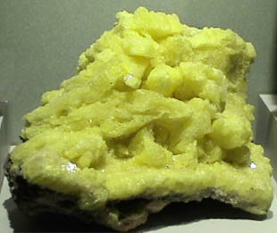
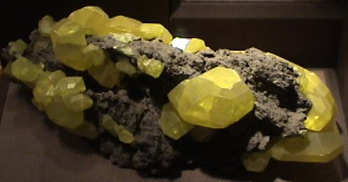

Sulfur often occurs almost pure form, but large crystals like this are rare. This sample, displayed in the Smithsonian Museum of Natural History, originated in Cozzodizi, Agrigento, Sicilia, Italy. The sample is 8-10cm across.
This sample of sulfur is about 15x10 cm and comes from Yellowstone National Park, Wyoming.


This extraordinary set of sulfur crystals is also a part of the Smithsonian collection. Closer views of some of the crystals are shown below.